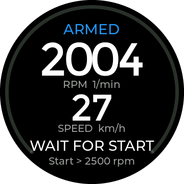
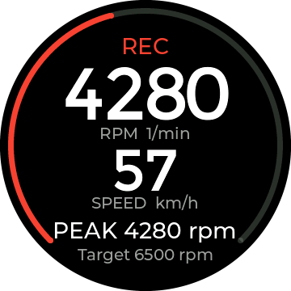
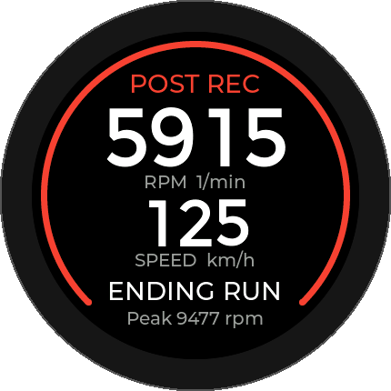
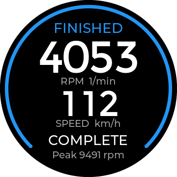
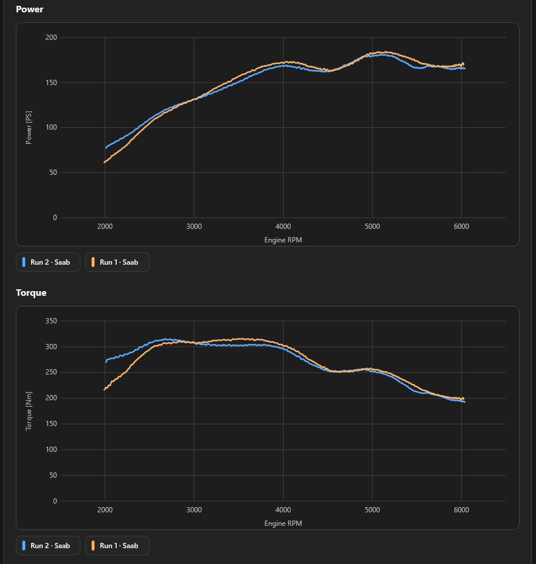

CanDisp 52
CanDisp Street Dyno
Record an acceleration run in a single gear. CanDisp estimates power and torque from engine speed over time and your vehicle data. View the curves and compare runs in your browser.
View the Saab comparisonHow recording works
-

Armed
Below the start RPM, CanDisp waits for the run to begin.
-

Recording
Recording starts automatically when engine speed rises past the start threshold.
-

Post-run recording
When engine speed keeps falling, CanDisp continues recording for a short time.
-

Finished
Recording ends and CanDisp shows the run status.
The target RPM determines whether a run is marked as complete.
Browser-based analysis
Comparing two Saab runs
Both runs share the same RPM axis, so you can compare power and torque at the same engine speed.
Use Show Dyno Curves to display up to four saved runs together. Recorded CAN channels such as lambda or manifold pressure can be shown as additional curves.

What you need for a run
- Engine RPM as a CAN signal. Vehicle speed is optional.
- A vehicle profile with vehicle and gearing data for the analysis.
- A single gear throughout the acceleration run.
In Dyno Runs, you can analyse saved runs again, protect them from being overwritten, and export them as .dyn files.